TUTORIAL: CREATE AN XSCHEM SYMBOL
In this tutorial we will build a 4011 CMOS quad 2-input NAND symbol.
This IC has 4 nand gates (3 pins each, total 4*3=12 pins + VDD,VSS power pins)
This device comes in a dual in line 14 pin package.
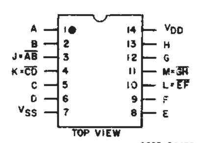
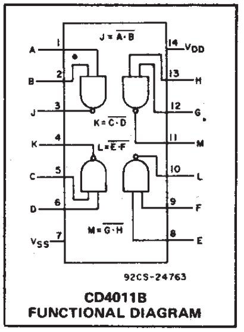
-
Start xschem giving 4011-1.sym as filename:
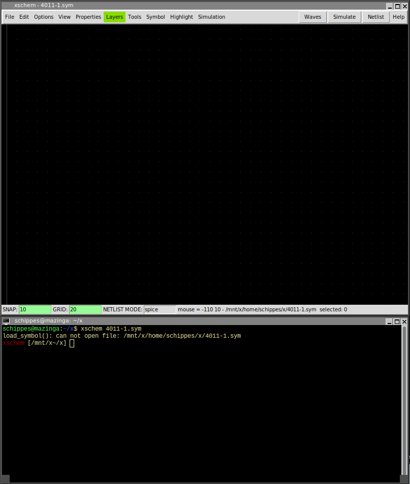 -
use layer 4 (the default) to draw the following shapes, use l to draw lines
and use Shift-c to draw arcs, use Ctrl-Shift-c to draw circles.
Arcs and circles are drawn by specifying start - end point and a 3rd way point.
You will need to change the grid snap to '5' for drawing the smallest objects
using the g key. Be sure to restore the grid snap to the default value
with Shift-g as soon as you are done. Also ensure that the gate terminals
are on grid with the default '10' snap setting.
Use the m key after selecting objects to move them around.
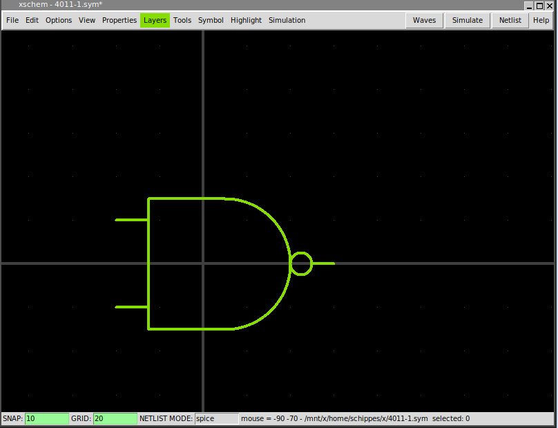Do NOT forget to reset the grid setting to the default (10) value as soon as you finished drawing small objects, otherwise the rest of the objects will be all off grid making the symbol unusable
-
Create pins, select layer 5 from the Layers menu.
Set grid snap to 2.5 to allow drawing small rectangles centered on gate terminals.
Start from the 'A' input of the nand gate (we assume A to be the left-top input), then
the 'B' input (the lower left input terminal), then the 'Z' output (the right terminal).
If you click and hold the mouse selecting the rectangles the 'w' and 'h' dimensions are shown.
They should be equal to 5. remember to reset the grid to default 10 when done.
Update: a more advanced command is now available to place a symbol pin: Alt-p
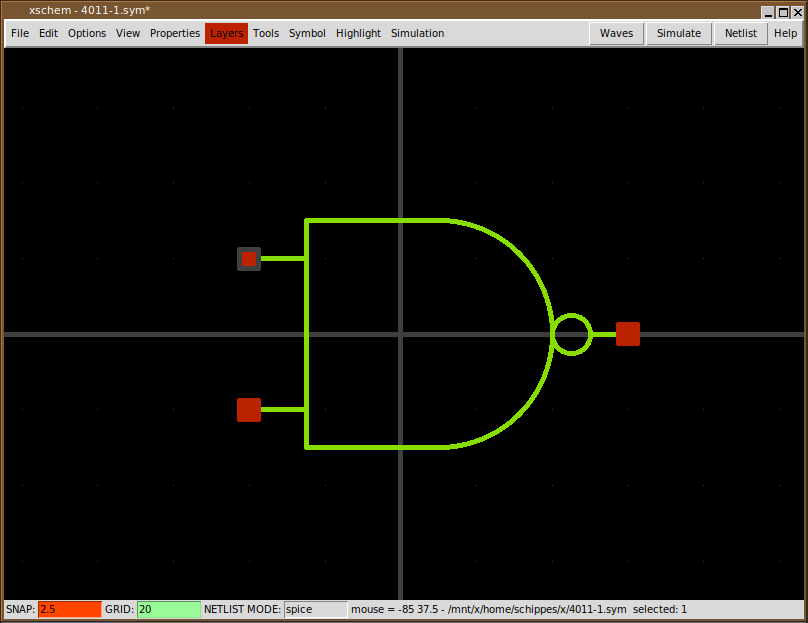
-
Now when no object is selected press q to edit the symbol global attributes. Type the following
text:
type=nand tedax_format="footprint @name @footprint device @name @device" template="name=U1 device=CD4011B footprint=\"dip(14)\" numslots=4 power=VCC ground=GND" extra="power ground" extra_pinnumber="14 7"
Instead of the q key the attribute dialog box can also be displayed by pressing the right mouse button
these attributes specify the gate type, the format for tedax netlist, the template attribute specifies default values for attributes and defines pin connection for VDD and VSS that are associated to package pins 14 and 7. The device attribute specifies the component name to be used in the tEDAx netlist (this is usually the name of the IC as shown in the datasheet). The extra and extra_pinnumber attributes specify extra pin connections that are implicit, not drawn on the symbol. This is one of the possible styles to handle power connections on slotted devices.
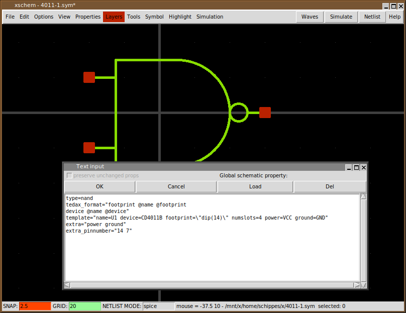 -
Press the t to place some text; set text v and h size to 0.2 and write @name;
this will be replaced with the instance name (aka refdes) when using the symbol in a schematic.
Place a similar string with text @symname and place it under the @name string.
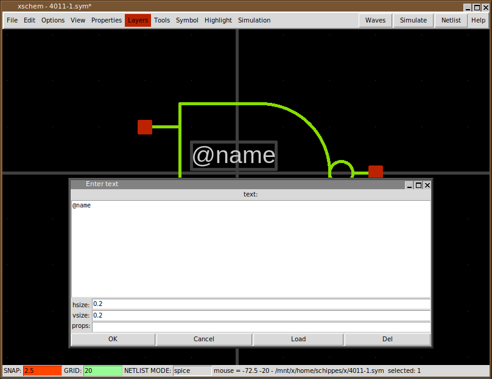 -
select the red pins (click the mouse close to the interior side of the rectangle corners)
and press q, set attribute
name=A dir=in pinnumber=1:5:8:12 for the upper left pin, name=B dir=in pinnumber=2:6:9:13 for the lower left pin, name=Z dir=out pinnumber=3:4:10:11 for the right output pin. As you can see pin numbers 7 and 14 are missing from the list of pins; they used for VSS and VDD power supplies, which are implicit (no explicit pins). Since we are creating a slotted device (an IC containing 4 identical nand gates) the pinnumber attribute for each pin specifies the pin number for each slot, so the following: name=A dir=in pinnumber=1:5:8:12 specifies that pin A of the nand gate is connected to package pin 1 for nand slot 1, to package pin 5 for nand slot 2 and so on.i The dir attribute specifies the direction of the pin; XSCHEM supports in, out and inout types. These attributes are used mainly for digital simulators (Verilog and VHDL), but specifying pin direction is good practice anyway.
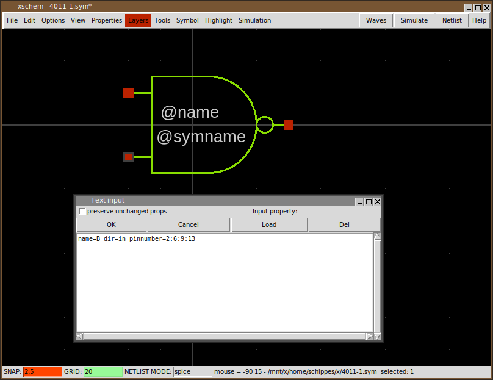Instead of the q key the attribute dialog box can also be displayed by placing the mouse pointer over the pin object and pressing the right mouse button
-
We want now to place some text near the gate pins to display the pin number: again, use the t key
and place the following text, with hsize and vsize set to 0.2:
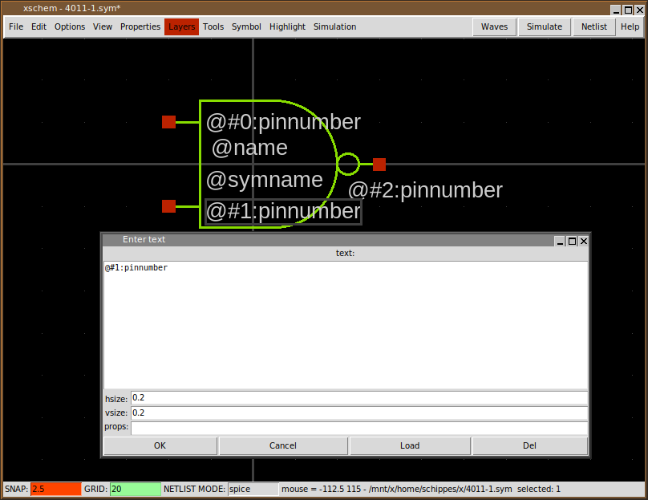
The complicated syntax of these text labels has the following meaning:
- The @ is the variable expansion (macro) identifier, as usual.
- The #0 specifies pin with index 0, this is the first pin we have created, the upper left nand input. The index of a pin can be viewed by selecting the pin and pressing Shift-s.
- The pinnumber specifies the attribute we want to be substituted with the actual value when placing the gate in a schematic as we will see shortly.
-
There is another syntax that can be used to display pin numbers, instead of specifying the pin index
in XSCHEM list (that reflects the creation order) you can reference pins by their name;
The only reason to use the previous syntax with pin index numbers is efficiency when dealing with
extremely big symbols (SoC or similar high pin count chips).
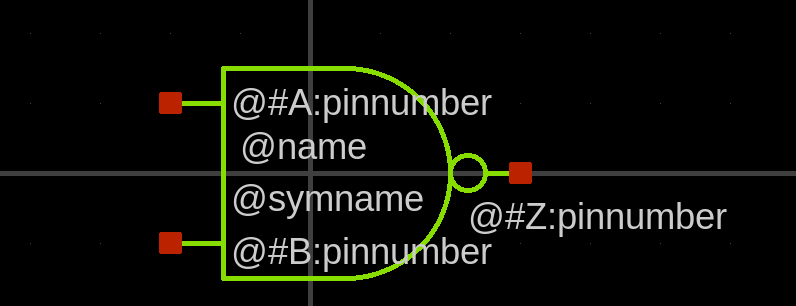 -
The symbol is now complete; save it and close XSCHEM. Now open again xschem with an empty schematic,
for example xschem test.sch. Press the Insert key and place the 4011-1 symbol:
We see that all pin numbers are shown for each pin; this reminds us that this is a slotted device! slotted devices should specify the slot number in the instance name so, select the component, press q and change the U1 name attribute to U1:1. You can also remove the .sym extension in the 'Symbol' entry of the dialog box, for more compactness:
As you can see now the slot is resolved and the right pin numbers are displayed. Now select and copy the component (use the c key), and change the name attribute of the new copy to U1:3:
-
Now draw some wires, for example to create an SR latch as shown, use the w key
to draw wires; when done with the wiring insert a net label by pressing the Insert
key and navigating to .../share/xschem/xschem_library/devices (the XSCHEM system
symbol library) and selecting lab_pin:
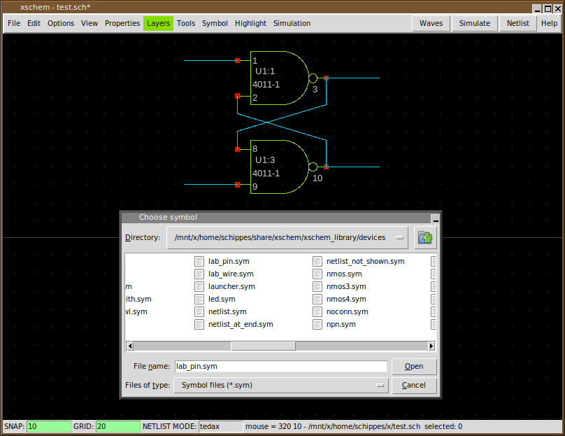
Place 4 of these lab_pin symbols and set their lab attribute to S_, R_, Q, Q_ respectively; place the 4 labels as shown (use the Shift-f key to flip the Q, Q_ labels):
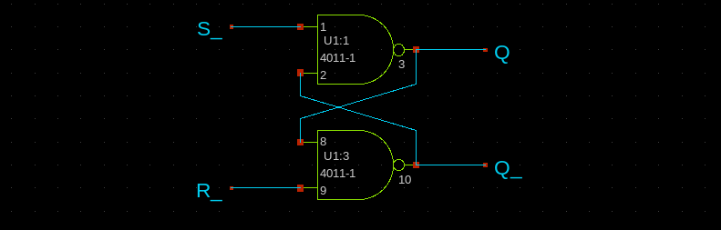
-
The test circuit for this tutorial is now complete: its time to extract the tEDAx netlist;
press the Shift-A key to enable showing the netlist window, press
Shift-v multiple times to set the netlisting mode as shown in the bottom status bar
to tedax, and finally press the Netlist button located in the top-right
region of the window:
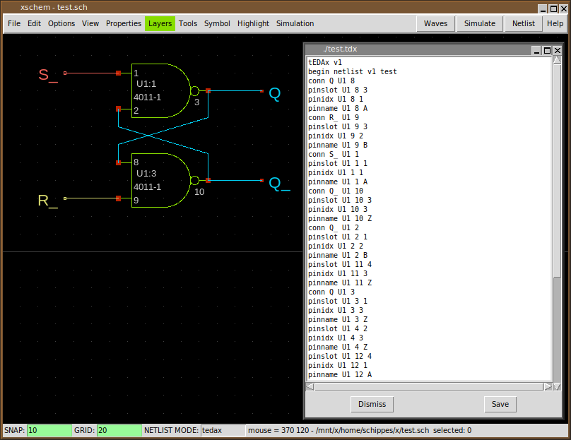
This is the resulting netlist you should get:
tEDAx v1 begin netlist v1 test conn Q U1 8 pinslot U1 8 3 pinidx U1 8 1 pinname U1 8 A conn R_ U1 9 pinslot U1 9 3 pinidx U1 9 2 pinname U1 9 B conn S_ U1 1 pinslot U1 1 1 pinidx U1 1 1 pinname U1 1 A conn Q_ U1 10 pinslot U1 10 3 pinidx U1 10 3 pinname U1 10 Z conn Q_ U1 2 pinslot U1 2 1 pinidx U1 2 2 pinname U1 2 B pinslot U1 11 4 pinidx U1 11 3 pinname U1 11 Z conn Q U1 3 pinslot U1 3 1 pinidx U1 3 3 pinname U1 3 Z pinslot U1 4 2 pinidx U1 4 3 pinname U1 4 Z pinslot U1 12 4 pinidx U1 12 1 pinname U1 12 A pinslot U1 13 4 pinidx U1 13 2 pinname U1 13 B pinslot U1 5 2 pinidx U1 5 1 pinname U1 5 A conn VCC U1 14 pinname U1 14 power pinslot U1 6 2 pinidx U1 6 2 pinname U1 6 B conn GND U1 7 pinname U1 7 ground footprint U1 dip(14) device U1 CD4011B end netlist
This concludes the tutorial; of course this is not a complete circuit, connectors are missing among other things, but the basics of creating a new component should now be less obscure.